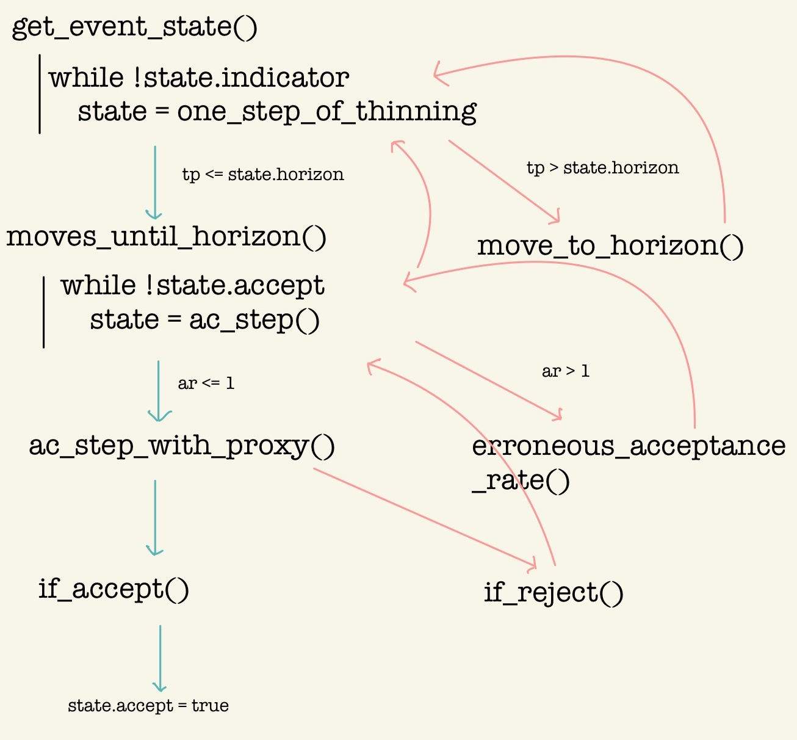

Implementation Details of PDMPFlux.jl
Simulating PDMPs with Automatic Differentiation
1 Introduction
In this introduction, we quickly give an overview of how the PDMPFlux.jl package works, through a standard example.
Take the Sticky Zig-Zag Sampler [@Bierkens+2023] as an example.
sampler = StickyZigZag(dim, ∇U)This instantiates the sampler, an object of an
AbstractPDMPsubtype.output = sample_skeleton(sampler, N_sk, xinit, vinit)This takes a sampler object, and returns a
PDMPHistoryobject, by transforming thePDMPStateobject while pushing its snapshots into thePDMPHistoryobject.
2 Directory Structure of PDMPFlux.jl/src
2.1 Composites.jl
2.2 sample.jl
sample.jl contains functions, called by users, to start MCMC sampling. The ProgressBar package is used to be friendly to users.
2.3 SamplingLoop.jl
This module contains 10 functions. Some of them are summarized in the following figure:

2.4 UpperBound.jl
This module contains next_event() function and 3 constructors for BoundBox object, with the name of upper_bound_**().
2.5 diagnostic.jl
function anim_traj(
history::PDMPHistory,
T_max::Int;
T_start::Int=1,
plot_start::Int=1,
filename::Union{String, Nothing}=nothing,
plot_type="2D",
color="#78C2AD",
background="#FFF",
coordinate_numbers=[1,2,3],
dt::Float64=0.1,
verbose::Bool=true,
fps::Int=60,
frame_upper_limit::Int=10000,
linewidth=2,
dynamic_range::Bool=false
)2.6 plot.jl
3 Implementation of the Samplers
3.1 Introduction
All samplers are defined as subtypes of AbstractPDMP in Samplers/AbstractPDMP.jl Section 3.2.
Different samplers have four different fields in PDMPState object, which are upper_bound_func, rate, rate_vect, and velocity_jump, as we learned in Section 2.1.
The four special fields are initialized in the constructor defined in the respective Samplers/<Name>.jl module.
3.2 Samplers/AbstractPDMP.jl
This module contains one line
abstract type AbstractPDMP endand one function, whose signature is
init_state(pdmp::AbstractPDMP, xinit::Array{Float64}, vinit::Array{Float64}, seed::Int) -> PDMPStateThis init_state() is basically a constructor for PDMPState, called in sample_skeleton() Section 2.2.
It is defined in AbstractPDMP.jl because the composite PDMPState must have different field values depending on the type of the argument pdmp.
The remaining special fields, velocity_jump and flow are defined, together with initialization of rate and rate_vect, in the sampler specific modules, to which we will turnin the following sections.
3.3 Samplers/ZigZagSamplers.jl
In this module, the declaration
mutable struct ZigZag <: AbstractPDMPis followed by the 2 constructors, ZigZag() and ZigZagAD(), whose signatures are
function ZigZag(dim::Int, ∇U::Function; refresh_rate::Float64=0.0, grid_size::Int=10, tmax::Union{Float64, Int}=2.0,
vectorized_bound::Bool=true, signed_bound::Bool=true, adaptive::Bool=true)
function ZigZagAD(dim::Int, U::Function; refresh_rate::Float64=0.0, grid_size::Int=10, tmax::Union{Float64, Int}=2.0,
vectorized_bound::Bool=true, signed_bound::Bool=true, adaptive::Bool=true, AD_backend::String="Zygote")Notice the difference in ∇U and U in the arguments.
Two flags signed_bound and vectorized_bound are true in default, in which case signed_rate_vect is used.
This is called the signed strategy, detailed in [Section 4.4.2 @Andral-Kamatani2024].
The vectorized_bound is also special to the Zig-Zag samplers.
3.4 Samplers/BouncyParticleSamplers.jl
Similar to the Zig-Zag samplers, mutable struct BPS and 2 constructors BPS() and BPSAD() are defined.
Difference is that, in BPS, vectorization is not used, therefore vectorized_bound=false no matter what the user specifies.
Note that typically Bouncy Particle Samplers need nonzero refresh rate, therefore refresh_rate=0.0 would result in erronous samples.
3.5 Samplers/ForwardEventChainMonteCarlo.jl
Forward ECMC (Event Chain Monte Carlo) is a generalizatione of the Bouncy Particle Sampler, being free from the need of refreshing, substituting it with a ‘informed’ velocity jump.
Regarding the implementation, however, note there is an error in the pseudo-code of [@Michel+2020]’s paper, and in the implementation of the pdmp_jax package.
To sum it up, the velocity jump is implemented separately on \(\mathbb{R}\nabla U\) and \((\mathbb{R}\nabla U)^\perp\). To the former, the velocity is newly sampled from the invariant distribution directly, while to the latter, occasionally (tuned by mix_p) only two dimensions of them are changed. (If ran_p=false, they are swaped.)
As a result, the sampler loses ergodicity and confined to a certain subspace when, for example, \(U\) is completely isotropic and the initial velocity is proportional to its contours.
3.6 Samplers/StickyZigZagSamplers.jl
This module implements the Sticky Zig-Zag sampler, for variable selection with the spike-and-slab prior.
The sampler takes additional argument κ, which has to be positive Float64 or Inf, determining (inverse) frequency of the sticking behaviour.